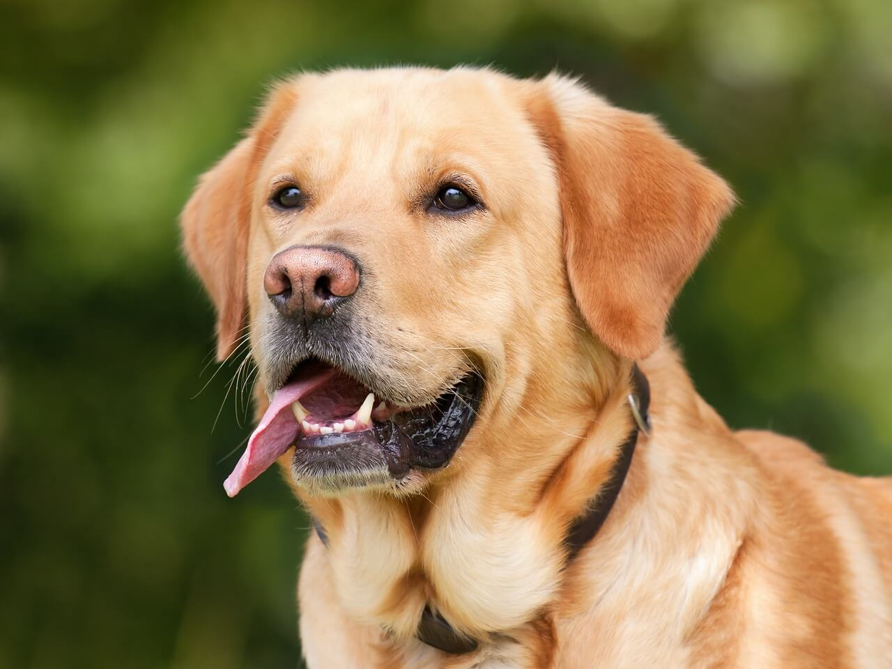
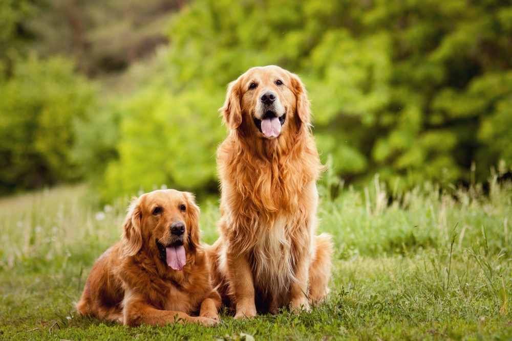
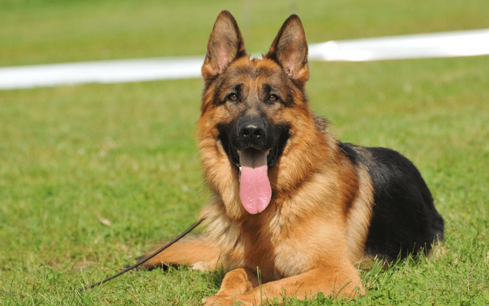
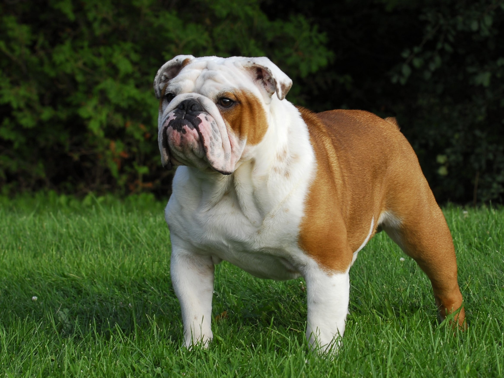
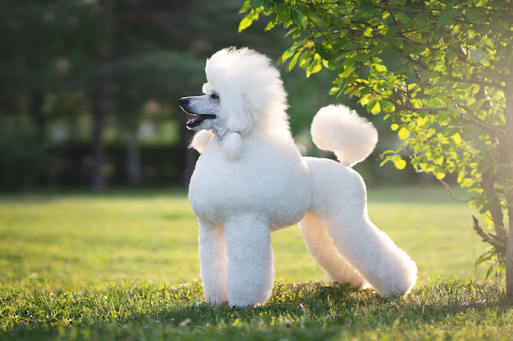

Najpopularniejsze rasy psów:
Autor: Nina Łopacińska
Data publikacji: 30 grudnia 2023
Wprowadzenie do fascynującego świata psich towarzyszy
Pies jest jednym z najstarszych i najbardziej oddanych towarzyszy człowieka. Od stróżów domów po wiernych przyjaciół, psy są znane ze swojej różnorodności, zarówno pod względem wyglądu, jak i charakteru. Poniżej przedstawiamy krótki przegląd niektórych najpopularniejszych ras psów, które zdobyły serca ludzi na całym świecie.
| Rasa | Charakter | Zdjęcie |
|---|---|---|
| Labrador Retriever |  | |
| Golden Retriever |  | |
| Owczarek Niemiecki |  | |
| Bulldog Angielski |  | |
| Pudel |  |